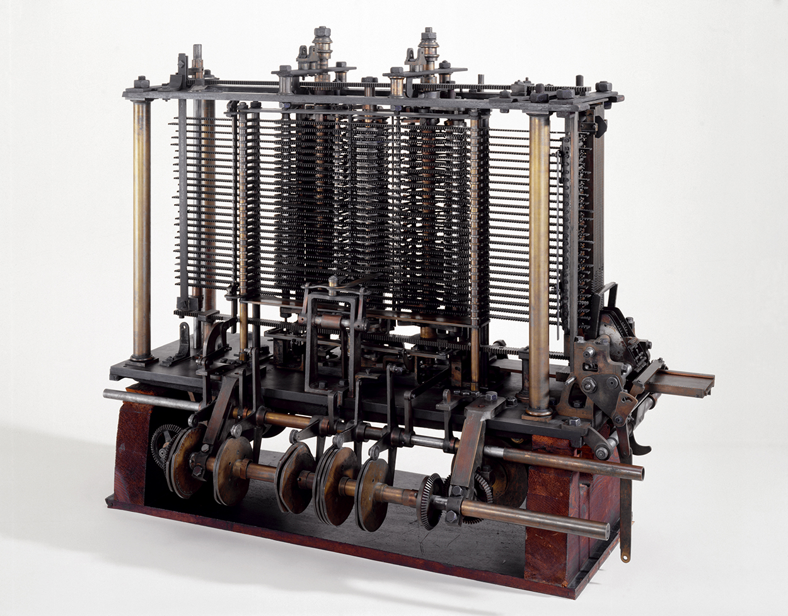
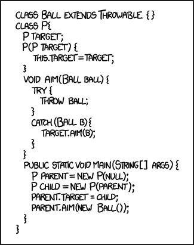

Introduction — Your First Program
Today assumes you have never programmed before. You will see more things than we can fully explain, and that is on purpose — Week 1 is about recognising the shape of a program, not mastering it.
The lecture, then the practice
Choose a section from the list to open it — or use the arrow keys once the list has focus. Code blocks are live: edit them, run them, and break them on purpose.
01What programming is
1.1Telling a computer what to do
Once that meant writing the right sequence of zeroes and ones into memory. In 1954 John Backus developed FORTRAN, and the programmer could start caring about what to do rather than exactly how.

{kind=link}

{kind=link}
The history of programming is the history of raising the level of abstraction. Every convenience you are about to complain about was once a luxury.
1.2“Can’t AI just do all this now?”
A randomised controlled trial by METR (July 2025) gave experienced developers AI tools on their own projects. They predicted they would be 24% faster. They were 19% slower — and afterwards still believed they had been 20% faster.

They could not tell. The tool is not the problem — the inability to evaluate its output is, and that is a reading skill. It is what this subject builds.
1.3The hard part is knowing what is hard

Two requests that sound equally reasonable to someone who has never programmed. One is an afternoon’s work; the other was an open research problem for decades. Building the instinct for which is which takes the whole session — you will start the first time an “easy” exercise takes two hours.
1.4The three basic tools
- State — managing what situation the program is in
- Branching — choosing which code runs, based on the state
- Repetition — repeating code, controlled by some parameter
Add input and output and that is everything needed for a general-purpose language. This is SLO1.
| Concept | Week | Topic |
|---|---|---|
| State | Week 2 | Data types and variables |
| Branching | Week 3 | Decisions and branching program flow |
| Repetition | Week 5 | Loops and iterative program flow |
Everything from Week 6 — classes, methods, lists, files, inheritance — adds no fourth idea. It is about organising these three as programs grow.
02Your first Java program
2.1Hello, Java
A Java program is a sequence of statements in blocks. Blocks nest, and the top level is a class. Run this, then change the message and run it again.
Now break it on purpose: delete the semicolon and run it again. Read what the compiler says before you put it back.
2.2Java is compiled

Before your Java runs, a compiler reads the whole file and translates it. If it cannot, nothing runs at all — which is why Java catches some mistakes before the program starts. Python skips this step: a trade, not a free win.
2.3Two rules, and some conventions
Java is case sensitive. bob ≠ Bob ≠
BOB. And the file name must match the public class name —
public class Hello lives in Hello.java.
Conventions, which everyone follows but nothing enforces: classes start uppercase,
variables lowercase, constants in ALL_CAPS, and you indent every new block.
| Token | What it means | Explained in |
|---|---|---|
| public | everything can access this | Week 7 |
| static | needs no object to run | Week 7 |
| void | returns nothing | Week 7 |
| String[] args | an array of Strings | Week 4 |
Java 25 added a “smooth on-ramp” so beginners can skip that boilerplate.
On public static void main(String[] args), the official OpenJDK proposal
(JEP 512) says: “mysterious and unhelpful… not used in small
programs.” If it felt like meaningless ritual, that was not you being slow.
03Variables, types and values
3.1Declaration, initialisation, assignment
Declaration is a type and a name. Initialisation is the first assignment. Assignment takes the value on the right and stores it on the left.
In maths x = 4 asserts that x and 4 are the same. In Java
x = 4; takes the value on the right and stores it on the left.
That is why a = a + 1; is nonsense as maths and routine as Java.
3.2Every type is a promise about size
In December 2014 Psy’s Gangnam Style passed
2,147,483,647 YouTube views. That is exactly 231−1 — the
largest number a 32-bit int can hold. YouTube moved the counter to 64 bits.
| Type | Runs out at about |
|---|---|
| int | 2.1 billion |
| long | 9.2 quintillion |
In Java, choosing is your job. Python has one int with no
limit and chooses for you.
3.3What this looks like in real code
Nobody ships 7 / 2. They ship this — and it prints a plausible number every
single time:
It compiles. It runs. Nothing warns you. One wrong type, and you have now met the only kind of error that never announces itself.
3.4Naming things

“There are 2 hard problems in computer science: cache invalidation, naming things, and off-by-1 errors.”
Leon Bambrick, after Phil KarltonName a variable for the person reading it in Week 11. That person is you.
04The same ideas in Python
4.1Hello, Python
That is the whole program, because Python allows code outside of classes while Java requires everything inside one. The feature lists are almost identical — only two rows differ, and they explain nearly everything else you will notice.
| Java | Python | |
|---|---|---|
| Execution | compiled | interpreted |
| Typing | static | dynamic |

A joke about how little Python makes you write — and only half a joke. Java’s ceremony buys errors caught before the program runs. Neither is better.
4.2Indentation is not decoration
Java delimits blocks with { and }, so formatting is cosmetic.
Python uses the indentation itself. Run this with 5, then with
50. Then un-indent the print and try 50 again.
Use four spaces and let the editor do it. Never mix tabs and spaces — it produces errors that are invisible on screen. In Java bad indentation is ugly; in Python it is wrong.
05When things go wrong
5.1The first actual bug

{kind=link}
Engineers had been calling faults “bugs” since Edison — which is exactly why the note says first actual case. It is a pun, and it only works because the word already existed. Grace Hopper did not coin it; she just found the best possible example.
5.2Three kinds of error
- Compile-time — the compiler cannot compile your code. It tells you.
- Run-time — it compiles, then crashes while running. It tells you.
- Logic — it runs perfectly and does the wrong thing. Nothing tells you.
On 19 July 2024 a CrowdStrike update crashed roughly 8.5 million Windows machines. The code expected 20 values; the update sent 21. Reading the 21st ran off the end of the array. It compiled, it shipped, and it passed their tests.
A QA engineer walks into a bar. Orders a beer. Orders 0 beers. Orders −1 beers.
Orders a lizard.
The first real customer asks where the toilet is. The bar bursts into flames.
5.3Reading a compile error
Run this. It will not compile — and that is the point.
Which file → which line → what
kind → which token (follow the ^).
1. Turn on Line Numbers in the Ed editor settings. 2. Fix the first error, then recompile — errors 2 through 14 are usually downstream of error 1.
5.4Crashes, and reading a stack trace
This one compiles. It asks for a name, and then tries to read it as a number.
Most of the trace is inside Scanner — a thoroughly tested library. One line
is yours. Start there. This program works fine if your name is a
number.
Python puts the error type last where Java puts it first. In a Python traceback, read the last line first:
5.5Debugging, honestly

“Debugging is twice as hard as writing a program in the first place. So if you’re as clever as you can be when you write it, how will you ever debug it?”
Brian Kernighan, The Elements of Programming Style, 197899 little bugs in the code. Take one down, patch it around — 127 little bugs in the code.
Programmer folkloreWrite the boring, obvious version first. You will be reading it again at 11pm with something broken. Bugs are not a sign you are bad at this.
06Ed, labs and getting help
6.1Ed, and why we ask you to post publicly

- A public thread answers it once, for everybody
- A private one answers it once, for you
- Search first — and post no code in the thread
Solved it yourself after posting? Reply with the answer. Do not be the 2003 forum post that says “never mind, fixed it”.
6.2Two ways to get unstuck


{kind=link}
You usually find the bug mid-sentence: “… this line takes the total and… oh.” The comic is a real algorithm — try it for ten minutes before you post.
6.3Run, Mark, and the lab rules
Run executes your code so you can watch it behave. Mark submits it to automated tests.
- Unlimited attempts — attempt 1 and attempt 101 score the same
- Output must match exactly — a stray space fails the test
- You must pass every test case in an exercise to get its marks
- Assessed exercises are due 11:55pm the Monday of the following week
“But it works on my machine!” Ed is the machine that counts.
Programmer folklore6.4Why we care that you can read code
The Stack Overflow Developer Survey 2025: 84% of developers use AI tools, but only 3.1% highly trust the output. The biggest frustration, at 66%, is “AI solutions that are almost right, but not quite.”
“Almost right” is only visible if you can read the code. That is what this subject builds, and what the four oral code comprehension checks measure. It is also why pasting in code you cannot explain fails twice — as misconduct, and as engineering.
07Coding exercises
Six exercises, marked automatically against test cases — the same idea as the Ed labs, but nothing here is recorded or submitted. Write your answer, press Run tests, and read what comes back. A worked solution sits under each one, but try it first: reading a solution teaches you far less than failing a test does.
A capital letter or a missing full stop fails the test, exactly as it would on Ed. Trailing spaces and the final newline are the only things forgiven.
08Team activity
Three or four people, fifteen minutes, then two minutes to report back. These run in the lecture and in your first lab — class activities like these count towards the participation side of your mark.
Write the algorithm for something ordinary
Pick one: making instant noodles, getting from the front gate to this room, or withdrawing money from an ATM. Write it as numbered steps precise enough that someone who has never done it could follow along.
- Where did you need a decision (“if the queue is long…”)?
- Where did you need repetition (“keep stirring until…”)?
- What did you assume the reader already knew? That assumption is the bug.
Report back: read out one step another group would misread.
Break it on purpose
Open the Playground with the Hello preset. Take turns making one change each and predicting the result before running it:
- delete a semicolon
- change
Hellotohelloin the class name only - delete one
} - change
printlntoprintline
Report back: which error message was the most misleading, and what it actually meant.
The class average bug
Section 3 has a program that prints a class average of 75 when the real
answer is 75.33. It compiles, it runs, and nothing warns you.
- How would you have caught this? Be specific — “testing” is not an answer.
- Now consider marks of 74, 75 and 76: the program prints 75, which is correct. What does that tell you about choosing test cases?
- CrowdStrike shipped a bug of exactly this kind to 8.5 million machines. What would you have needed to notice, and when?
Report back: one test case that would have caught it.
Four times this session you will be asked to explain code in person. Groups that talk through code every week find that conversation ordinary; groups that never do find it hard. That is the whole reason these activities exist.
09Quiz
Twenty questions on everything above. Answer them all, then grade. Every question explains its answer, including why the wrong options are wrong. Nothing is recorded or submitted.
10Further reading
None of this is assessed. It is here for the moment a section leaves you curious, and for the claims in the lecture that you should check rather than take my word for.
Behind the claims in this lecture
Do AI tools actually speed developers up?
The randomised trial behind the 19% figure. Sixteen experienced developers, 246 real issues — and a gap between what they felt and what the stopwatch said.
metr.org Proposal · section 2.3JEP 512 — why Java 25 lets you skip the boilerplate
Java's own designers on public static void main: “mysterious and unhelpful”. Short, readable, and oddly comforting in week one.
openjdk.org Report · section 5.2CrowdStrike's root cause analysis
How expecting 20 values and receiving 21 took out 8.5 million machines. The technical write-up is heavier going; this is the readable version.
abc.net.au Regulator · section 5.2SEC — Knight Capital
Four million orders sent to fill 212, from code that had sat dormant since 2005. The official account, not the retelling.
sec.gov Survey · section 6.4Stack Overflow Developer Survey 2025
84% use AI tools; 3.1% highly trust the output. The AI section is the one worth your time.
survey.stackoverflow.coWhen you want to look something up
Java API documentation
Every class and method in the standard library. Intimidating at first; indispensable by Week 6. Start with String and Scanner.
docs.oracle.com ReferenceThe Python documentation
The tutorial is genuinely good and written for people who are new. The library reference is what you will return to.
docs.python.org ToolPython Tutor
Paste a short program and watch it execute one line at a time, with every variable drawn out. The fastest way to see what assignment really does.
pythontutor.comIf you want to go further
Project Euler
Mathematical problems that need a program. Problem 1 is within reach after Week 5 — most of the rest are a long game.
projecteuler.net Comicsxkcd
Where the comics in this lecture come from. The archive is a reasonable education in programming culture by itself.
xkcd.com ReadingHopper's moth, and the myth around it
The Computer History Museum on 9 September 1947. Useful practice at checking a story everyone repeats — Hopper did not coin the word.
computerhistory.orgM1History of computing
None of this is examinable. It is here because the ideas in section 1 have a history,
and because knowing where public static void main came from makes it feel
less arbitrary.
“The Analytical Engine weaves algebraic patterns just as the Jacquard-loom weaves flowers and leaves.”Ada Lovelace, Note A to her 1843 translation of Menabrea’s paper on the Analytical Engine
Key events
The first program, for a machine that was never built
Ada Lovelace publishes a set of Notes on Babbage's Analytical Engine. Note G contains a step-by-step method for computing Bernoulli numbers — widely regarded as the first published algorithm intended for a machine. She also saw further than Babbage: that such a machine might manipulate symbols, not just numbers.
Portrait by A. E. Chalon — public domain
{kind=link}

The Analytical Engine
Charles Babbage designs a general-purpose mechanical computer with a store, a mill, and punched-card input. He never finished it. The design was essentially correct.
Science Museum — photo, CC BY-SA 2.0
.jpg){kind=link}
What a computer can and cannot do
Alan Turing's paper On Computable Numbers defines a simple abstract machine and proves there are questions no machine can answer. Written nine years before a working electronic computer existed.
{kind=link}
ENIAC, and its programmers
One of the first general-purpose electronic computers. Its six primary programmers — Betty Snyder, Betty Jean Jennings, Kay McNulty, Marlyn Wescoff, Fran Bilas and Ruth Lichterman — were women, and were largely written out of the story for decades.
US Army — public domain
A moth, in Relay #70
Operators on the Harvard Mark II tape a moth into the logbook: “First actual case of bug being found.” The word bug was already decades old — which is the joke.
NSWC Dahlgren — public domain
FORTRAN, and the end of writing machine code
John Backus's team at IBM builds a language where you write a formula instead of moving registers by hand. Every abstraction you will use this session descends from this bet.
Arnold Reinhold, CC BY-SA 2.5
Python
Guido van Rossum releases Python, designed around readability — which is why your first Python program is one line and your first Java program is six.
Daniel Stroud, CC BY-SA 4.0
{kind=link}
Java
James Gosling's team at Sun releases Java: statically typed, garbage collected, and built to run the same program on any machine. The ceremony you will meet in week one is the price of those promises.
Peter Campbell, CC BY-SA 4.0
{kind=link}
The argument you walked in with
A randomised trial finds experienced developers were 19% slower with AI assistance while believing they were 20% faster. The history of programming is the history of raising abstraction — and of arguing about what the new abstraction costs.
Two quotes, and a warning about quotes
“Most people find the concept of programming obvious, but the doing impossible.”Alan Perlis, Epigrams on Programming, ACM SIGPLAN Notices, 1982
“Computer science is no more about computers than astronomy is about telescopes.”Mike Fellows — not Dijkstra You will see this attributed to Edsger Dijkstra almost everywhere. It appears to originate with Mike Fellows, in an article co-authored with Ian Parberry in Computing Research News, 1993. Dijkstra probably heard it from him. Like the moth, it is a story worth checking before repeating — Quote Investigator traces it.
“Don’t believe everything you read on the internet just because there’s a picture with a quote next to it.”Albert Einstein He did not say this. He could not have: Einstein died in 1955, and the web was not invented until 1989. The joke is self-demonstrating — a confident name and a photograph are the entire mechanism by which a fake quote travels, and it works even when the quote is telling you not to fall for it.

{kind=link}
M2Running Java and Python on your own machine
Ed gives you Java and Python in the browser, and Ed is what your marks come from. So is the playground on this site. Install things locally only if you want to — and if you do, do it when you are not against a deadline.
The short way (Windows and macOS)
Microsoft ship a single installer that sets up VS Code, a JDK and the Java extensions together. If you only want Java working, this is the whole job:
The longer way, in four steps
Install VS Code
Download it from code.visualstudio.com/download and pick your operating system. On Windows, tick Add to PATH when the installer offers it.
Install a JDK, for Java
VS Code runs Java code but does not include Java itself. Get a JDK from
Adoptium (Temurin). Ed runs Java
23; anything from 17 upwards behaves identically for everything in this
subject. Check it worked by opening a terminal and running
java -version.
Install Python 3
From python.org/downloads. Ed runs
3.12.7; any recent 3.x is fine. On Windows, tick “Add
python.exe to PATH” on the first screen of the installer —
missing that box is the single most common reason python is
“not recognised” afterwards. Check with python --version,
or python3 --version on macOS.
Add the two extensions
In VS Code press Ctrl+Shift+X (Cmd+Shift+X on macOS) to
open Extensions, then install:
- Extension Pack for Java — Microsoft. Bundles Red Hat's language support, the debugger, the test runner, Maven and project tools.
- Python — Microsoft. Pulls in Pylance for completion and error checking.
Running your first file
Make a folder, open it with File → Open Folder, and put your code inside it. Opening a single loose file works less well than opening the folder that contains it — the Java extension wants a folder to treat as the project.
- Java: create
Hello.java, then press the ▶ Run button abovemain, orF5. - Python: create
hello.py, then press ▶ at the top right, orF5.
- The file name must match the public class name.
public class Hellomust live inHello.java. Ed hides this from you; your own machine will not. pythonvspython3. On macOS and Linux the command is usuallypython3. Ifpythonopens something ancient or nothing at all, that is why.- “java is not recognised” means the JDK is not on your PATH. Reinstall and let the installer add it, or use the Coding Pack.
- Your local Java version is not Ed's. Code that runs on your machine can still fail on Ed, and Ed is what is marked. Submit there and check the result.
Do not spend an evening fighting an installer. Use Ed or the playground, and bring the error to a lab from Week 2 — setup problems are much faster to solve with someone looking at your screen.
M3History of Java
“Write once, run anywhere.”Sun Microsystems' slogan for Java, 1995 — the promise the whole design was built around
It was for television, not the web
James Gosling, Mike Sheridan and Patrick Naughton start the Green Project at Sun Microsystems, aiming at interactive TV and consumer electronics. The language is called Oak, after a tree outside Gosling's office.
Sun Microsystems — public domain
{kind=link}
The Star7
Oak is first demonstrated on 3 September 1992 running the Star7: a handheld touchscreen device with an animated guide. Interactive TV never happened. The language outlived the product by thirty years and counting.
Renamed, and aimed at the web
“Oak” was already taken, so the team renamed it after Java coffee. Sun announces Java at SunWorld on 23 May 1995; JDK 1.0 ships on 23 January 1996. The pitch is write once, run anywhere: compile to bytecode, run on any machine with a JVM.
James Gosling — Peter Campbell, CC BY-SA 4.0
Duke
Java gets a mascot, drawn by Joe Palrang. Duke is now open source under a BSD licence — which is the only reason he can appear on this page.
sbmehta — BSD licence
_waving.svg){kind=link}
Java becomes open source
Sun releases the JDK under the GPL as OpenJDK. Almost every JDK you can download today — Temurin, Corretto, Zulu, Microsoft's — is a build of that same codebase.
Oracle buys Sun
Oracle acquires Sun Microsystems and inherits Java. Gosling leaves within months.
Java 8, and the language loosens up
Lambdas and streams arrive. Java stops being purely “everything is a class” and borrows from functional programming. Java 8 is still running in production somewhere near you.
Six months, forever
From Java 9, a feature release every six months, with a long-term-support release every two years: 11, 17, 21, 25. Ed runs Java 23.
Java admits that week one is hard
Java 25 delivers JEP 512, letting beginners write void main() without a class around it, after four preview rounds. Thirty years on, the ceremony you meet in section 2 is officially acknowledged as a barrier.

class Ball extends Throwable, and a game of catch played with try and catch.It is real, and the canonical example is real too: the Spring Framework ships a class called
AbstractSingletonProxyFactoryBean.
Nobody is joking. You will not write anything like it this session.
M4History of Python
“Beautiful is better than ugly. Explicit is better than implicit. Simple is better than complex. … Readability counts.”Tim Peters, The Zen of Python (PEP 20). Type
import this into any Python to see all nineteen
A Christmas project
Guido van Rossum, at CWI in Amsterdam, starts Python in December as a hobby over the holidays — a successor to a teaching language called ABC, keeping its readability but fixing what he found frustrating.
Guido van Rossum — Daniel Stroud, CC BY-SA 4.0
Python 0.9.0
The first public release, in February. It already has functions, exceptions, and the core types you meet in section 4: str, list, dict.
Python Software Foundation — Commons. Python and the logo are PSF trademarks.
{kind=link}
Named after the comedy, not the snake
Van Rossum was reading scripts from Monty Python's Flying Circus and wanted a name that was short and slightly irreverent. The snakes came later, from everyone else. Python's own documentation still uses spam and eggs where other languages use foo and bar.
Python 2.0
List comprehensions, cyclic garbage collection and Unicode support. Python starts turning up far outside the places that adopted it first.
Python 3.0, and a decade of pain
Released 3 December 2008 and deliberately not backwards compatible — the chance to fix old mistakes, chiefly around text and bytes. Splitting the world in two took eleven years to heal. print stopped being a statement and became a function, which is why so many old examples online do not run.
The BDFL steps down
After a bruising argument over PEP 572 (the walrus operator), Van Rossum resigns as Benevolent Dictator For Life on 12 July. Python is now run by an elected Steering Council.
Python 2 ends
Support for Python 2.7 stops on 1 January 2020, twenty years after 2.0. If you find a tutorial using print "hello" without brackets, you have found a fossil.
Number one
Python tops the TIOBE index, largely on the back of data science and machine learning — fields that barely existed when it was a Christmas project. Ed runs 3.12.7.
import antigravity is a real command in Python. Try it in the playground, then read what it does.
What to actually do
On Ed, work through all seven Week 1 lessons, top to bottom:
- Everything you need to know about Ed — turn on Line Numbers
- Everything you need to know about labs
- An important warning — please read this one properly
- The Basics of Programming
- Introduction to Java
- Introduction to Python
- Debugging Programs — don't skip it; your first lab throws errors at you
Change things. Break things on purpose and read what the error says. Refreshing the page restores the original — you cannot damage anything.
Nothing needs installing — Ed gives you Java and Python in the browser. No lab in Week 1; labs start Week 2. Assessed lab exercises are due 11:55pm the Monday of the following week, with unlimited attempts — but you must pass all test cases in an exercise to get its marks.
Next week: variables, types, and talking to the user.
Everything cited on this page
Every claim above links to where it came from. Checking a source yourself is a better habit than trusting any lecture slide, including ours.
Articles and reports
| Used in | Source |
|---|---|
| 1.2 | METR — Measuring the Impact of Early-2025 AI on Experienced Open-Source Developer Productivity, 10 July 2025 |
| 2.3 | OpenJDK — JEP 512: Compact Source Files and Instance Main Methods |
| 3.2 | The Register — Gangnam Style BREAKS YouTube, 3 December 2014 |
| 4.1 | TIOBE Programming Community Index |
| 5.2 | ABC News — CrowdStrike root cause analysis, 7 August 2024 |
| 5.2 | US SEC — SEC Charges Knight Capital With Violations of Market Access Rule, 16 October 2013 |
| 6.4 | Stack Overflow Developer Survey 2025 — AI |
Comics
All by Randall Munroe, xkcd.com, used under CC BY-NC 2.5: 303, 353, 627, 979, 1425, 1513, 1739, 1838.
Photographs
- ENIAC, 1946 — US Army, public domain
- FORTRAN punched card — Arnold Reinhold, CC BY-SA 2.5
- Mark II logbook, 1947 — Naval Surface Warfare Center, Dahlgren, public domain
- Rubber duck debugging — Tom Morris, CC BY-SA 3.0
All photographs via Wikimedia Commons.